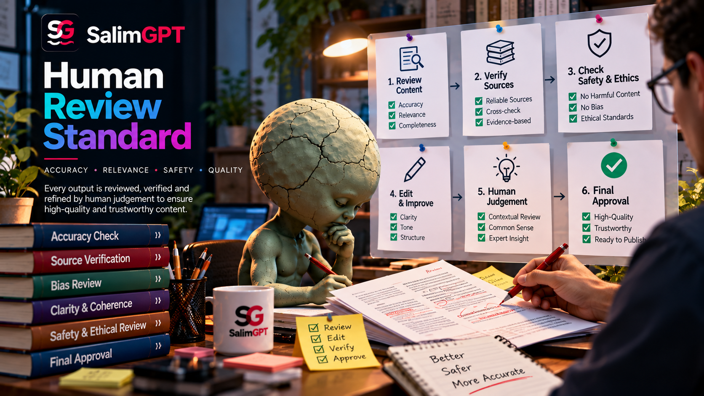

Research Review
Research direction, relevant evidence and source quality require human evaluation rather than automatic acceptance of retrieved information.
HUMAN-LED EDITORIAL RESPONSIBILITY
SalimGPT may use AI and other digital tools to assist research, drafting, organization, visual development, localization, synthetic voice and production. Human review remains responsible for evaluating evidence, checking important factual claims, making editorial decisions and approving final publication.
Human review is not a claim that every published work can never contain an error. It is a standard of editorial responsibility: automated output is not treated as a substitute for human judgment, verification and final approval.

REVIEW RESPONSIBILITIES
Review is broader than proofreading. It can involve research decisions, factual verification, context, visuals, language, AI-assisted output and final publication judgment.
Research direction, relevant evidence and source quality require human evaluation rather than automatic acceptance of retrieved information.
Important factual claims should be reviewed against appropriate evidence, especially where accuracy, attribution or context materially affects meaning.
Human judgment determines how facts, uncertainty, interpretation and competing explanations should be presented within a documentary.
AI-generated or AI-assisted material may support the workflow, but its output requires human assessment before it becomes part of published content.
Visual choices should be reviewed for factual meaning, context and the risk of creating a misleading representation.
Translation, subtitles, multilingual audio and other localization should preserve factual meaning and relevant context across languages.
CORE PRINCIPLE
AI systems, search tools, software and production technologies can improve speed, organization, experimentation and multilingual capability. They do not independently carry editorial responsibility for what SalimGPT publishes.
Human review is responsible for deciding whether material is sufficiently supported, whether context is missing, whether a representation is misleading and whether the final work is ready for publication.
REVIEW IN PRACTICE
Not every production action carries the same editorial risk. Human attention should be especially important where a decision affects factual accuracy, source interpretation, context, representation, translation or audience understanding.
Routine technical assistance can remain automated where appropriate, while consequential editorial decisions require human judgment and accountability.
REVIEW CHECKPOINTS
The exact workflow can vary by documentary, but these checkpoints describe the kinds of decisions that should not be delegated blindly to automated tools.
Determine whether a source actually supports the claim being made and whether stronger or more direct evidence is available.
Check material facts, names, dates, quantities, quotations, locations and other details that affect the documentary's meaning.
Assess whether important limitations, disagreement, uncertainty or contextual information has been omitted.
Review machine-generated suggestions, summaries, translations, images, narration or other outputs before they are relied upon.
Consider whether wording, sequencing, visuals or creative choices could create a materially misleading impression.
A human editorial decision should determine whether the finished work is ready to be published, corrected or held for further review.
AI OUTPUT REVIEW
AI systems can generate convincing text, summaries, translations, images, voices or suggestions even when parts of the output are inaccurate, incomplete or unsupported. Fluency alone is therefore not evidence of factual reliability.
Where AI-assisted output affects published content, human review should consider the relevant sources, factual claims, context, visual meaning and editorial purpose rather than accepting the output because it appears polished.
HUMAN JUDGMENT & AUTOMATION
Automation can perform useful production tasks without becoming responsible for the editorial meaning of the final documentary.
Search, organization, transcription, drafting, translation, visual experimentation, voice generation and other technical or creative tasks may be assisted by software or AI.
Humans remain responsible for evaluating evidence, resolving factual issues, choosing context, determining representation and approving the final work for publication.
MULTILINGUAL REVIEW
SalimGPT can distribute documentary work through language editions and multilingual audio. Translation and localization may require adaptation for clarity, but the underlying factual meaning should not be altered by convenience or automated output.
Human review is especially relevant where translation, pronunciation, cultural context or language-specific phrasing could materially change how a claim is understood.
AFTER PUBLICATION
Publication is not the end of editorial responsibility. Specific factual or rights concerns can require renewed review of evidence and published material.
Report a possible factual error or other specific issue that may require editorial review.
Learn how correction and update principles fit within the SalimGPT editorial process.
Use the dedicated pathway when the concern involves ownership, protected material or rights.
Review how SalimGPT explains research, editorial, production and accountability practices.
IMPORTANT CONTEXT
Research can be incomplete, sources can conflict, evidence can change and reviewers can make mistakes. Human review should therefore be understood as an accountability and verification standard rather than a guarantee of perfect accuracy.
When credible new evidence identifies a material problem, the appropriate response is renewed review, correction or clarification rather than relying on the fact that the material was previously reviewed.